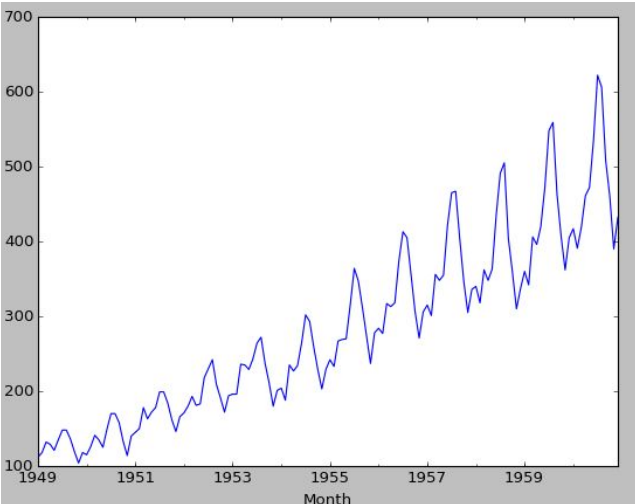
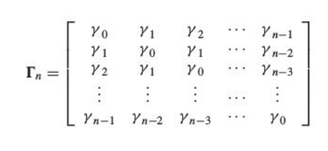

Motivation
Time series models are useful while working with serially correlated data. Most business houses work on time series data to analyze sales number (for the next year), website traffic, competition position and much more.
Some other important application spheres include:
- Economics: monthly data for unemployment, hospital admissions, etc.
- Finance - daily exchange rate, a share price, etc
- Environmental - daily rainfall, air quality readings.
- Medicine - e.g., ECG brain wave activity every 2-8 secs
We will consider in detail the the AirPassengers dataset while discussing time series in detail. You can find the dataset here:
https://www.kaggle.com/rakannimer/air-passengers/dataIt is a simple dataset with just two columns and we will be working on Python all the while. As evident from the figure below, the data gives information about the number of passengers travelling each month.
This is how the data head looks like:
The trends look like:
>
We see a definite rise in the overall passenger traffic as well as a seasonal nature
Few Important Terms
Trends:
Long term movement of meanSeasonality:
Cyclic fluctuations in calendar.
For example, there is seasonality in the monthly data, where high values always tend to occur in some particular months and low values always tend to occur in other particular months. In case, S = 12 (months per year) is the span of the periodic seasonal behavior. For quarterly data, S = 4 time periods per year.Schocastic Processes:
A stochastic or random process is a mathematical object usually defined as a collection of random variablesStationary Process:
- Strictly Stationary: Sequence {Xt ,t} is strictly stationary, if:
- Weakly Stationary: A process is weakly stationary or second order
stationary if:
Where, E is the expectation function
Basically, the mean and variance should not be a function of time (property of constant variance is also called homoscedasticity), i.e. In the first figure, the mean of the series is a function of time while in the second series the variance of the series changes over time i.e. the width between peaks and troughs.
White Noise:
A sequence of independent random variables with zero mean and variance ùùà 2 is called white noise. It is a weakly stationary series with ùú∏0=ùùà 2 and ùú∏k=0 (k‚âÑ0)Co-Variance:
A statistical measure of variation or association of one variable X with the other, Y Where E[X] is the expectation of X, also known as mean of random variable X cov(X,Y) is also denoted by ùùà(X,Y)
The above equation can be simplified using linearity property of Expectation function Also,Autocovariance:
Autocovariance is the covariance between a stochastic process at different times.Autocorrelation:
The autocorrelation function is defined as ratio of ùú∏(k) and ùú∏(0)
Autocorrelation and Autocovariance Function:
The autocovariance function of a weakly stationary process is a capture of variation of autocovariance with k. It can be expressed as f(k)= ùú∏(k). For example, the autocovariance function of a stochastic process Where ut is the white noise (WN(0,ùùà 2 )).
The autocovariance function for the above process is given by:- Note the autocovariance cuts off after lag 1
- Autocorrelation function can be similarly modelled , ⲣ(k) is used instead of ùú∏(k)
Autocovariance Matrix
Autocorrelation Matrix

Partial Autocorrelation Function (PACF):
- Partial Autocorrelation is the partial correlation of a time series with its own lagged values, controlling for the values of the time series at all shorter lags.
General Linear Process:
Partial correlation is different from variance in terms that it is a measure of association between two random variables, with the effect of one set of contributing variables removed. For example, we have data on the consumption, income, and wealth of various individuals and we wish to see if there is a relationship between consumption and income, failing to control for wealth. When we compute a correlation coefficient between consumption and income, the result would be misleading. Since income might be numerically related to wealth, which in turn might be numerically related to consumption; a measured correlation between consumption and income might actually be contaminated by these other correlations. The use of a partial correlation helps avoid this problem.
The Partial Autocorrelation function(PACF) plays an important role in identifying the lag of an autoregressive process. The use of this function was introduced as part of the Bob-Jenkins approach to time series modelling.
Going into the mathematical insights of PACF is out of the scope for this text. Only the plots of PACF are useful in understanding the order of AR(p) and ARMA(p,q) process.
Ѱ weights
It is a representation of a stochastic process as the output from a linear filter, whose input is white noise at :
where:
It allows us to represent the process as a weighted sum of present and past values of the white noise process at . The following properties of the white noise should be noted:
Π weights
An alternative way of modelling a linear process would be by representing the current deviation as a weighted sum of the previous deviations zt-1 ,zt-2 ,zt-3….
Relation between Ѱ and Π weights is given by
Where B is the backshift operator
AR Models- AR(p) Process
An autoregressive process of order p is represented as
Where B is the backshift operator and ùùì1 ,ùùì2 ,ùùì3 ,ùùì4 ,ùùì5‚Ķ. are adjustable parameters
Mathematically, we compare an AR(p) process with a general linear process to check stationarity, by imposing the condition:
For an AR(1) process the maths works like:
Which can written as:
- The autocorrelation function of an AR(p) Process dies down eventually
- The PACF function for an AR(p) Process cuts off
Autocorrelation Plot:
Partial Autocorrelation Plot:
The partial autocorrelation function is represented by ùùìkk k=1,2,3‚Ķ. For an AR process solving for k=1,2,3.. We obtain
- For an AR(p) process ùùìkk =0 for k>p and non zero for k ‚⧠p
- Basically the PACF cuts off after lag p
The above figure is a plot of an estimated PACF with two standard error limits assuming the model is AR(1). Since E[ùùì22 ] is also significant, there is a possibility of the process being AR(2). We can make further investigations to clear our doubts.
MA(q) Models : Moving Average Models
An MA(q) process looks like:
Since θB is a finite set, on comparing an MA process to a general linear process we always have the summation of ᴪ(B) converging. Hence an MA process is always stationary. We have to work to establish invertibility of an MA process.
- The autocorrelation function of an MA(q) process cuts off after q
- While the PACF dies down gradually
Autocorrelation Function:
Consider an MA(1) process with θ1=0.7
The theoretical and practical ACF plot might look dissimilar but the trend follows an overall similar pattern as PACF for an AR process.
For an MA(2) process
Partial Autocorrelation Function:
PACF for an MA(q) process gradually tapers towards zero in some manner
The PACF plot looks like
ARMA(p,q) Process: AutoRegressive Moving Average
It is just the linear combination of the above two processes studied
General Equation:
ARIMA(p,d,q) Models- Autoregressive Integrated Moving Average Models
It is just a generalization of the ARMA models. ARIMA models are applied in some cases where data shows evidence of non-stationarity, where an initial differencing step (corresponding to the "integrated"part of the model) can be applied one or more times to eliminate the non-stationarity.
Non- seasonal ARIMA Models:
If we combine differencing with autoregression and a moving average model, we obtain a non-seasonal ARIMA model. ARIMA is an acronym for AutoRegressive Integrated Moving Average model (“integration” in this context is the reverse of differencing). The full model can be written as
where yt is the differenced series (it may have been differenced more than once). The “predictors” on the right hand side include both lagged values of yt and lagged errors. We call this an ARIMA(p,d,q) model, where
Implementation and Model Identification:
Remember: The trends of ACF and PACF would play a key role in choosing a model
Implementation on our Case Study:
1) Visualizing and deriving Inferences
The above is a data visualization from the AirPassengers dataset, capturing their travel frequencies against time. Such a plot clearly demonstrates seasonality and non-stationarity(since the variance or the width of the peaks keep on increasing with time).
The data seems to have a trend and seasonality. We will try to break it down into four components. To make our lives easier, Python has a library called statsmodels. It would break the data down into an additive model or a multiplicative model.
Additive Model:
It works on the principle where the models looks like:
- An additive model is linear where changes over time are consistently made by the same amount
- A linear trend is a straight line
- A linear seasonality has the same frequency (width of cycles) and amplitude (height of cycles)
Multiplicative Model:
- A multiplicative model is nonlinear, such as quadratic or exponential. Changes increase or decrease over time.
- A nonlinear trend is a curved line.
- A non-linear seasonality has an increasing or decreasing frequency and/or amplitude over time
From the above plot we can see that it is clearly a Multiplicative model, as it is non linear, changing nearly as a power of 2.
Real-world problems are messy and noisy. There may be additive and multiplicative components. There may be an increasing trend followed by a decreasing trend. There may be non-repeating cycles mixed in with the repeating seasonality components.
Nevertheless, these abstract models provide a simple framework that you can use to analyze your data and explore ways to think about and forecast your problem.
1. A clear inference is the seasonality is at least 12 months.
2. The year on year trend show the number of passengers are increasing without
fail.
3. July and August have a significantly higher seasonal passenger traffic compared
to other months.
2. Stationarize the series
When modeling, there are assumptions that the time series we are dealing with is
stationary. In reality, this assumption can be easily violated in time series by the addition
of a trend, seasonality, and other time-dependent structures.
Once we know the patterns, trends, cycles and seasonality , we can check if the series
is stationary or not. Dickey – Fuller is a popular test to check the same. You can read up
on the maths behind Dickey Fuller test; for now we will cover implementation and
inferences
Augmented Dickey Fuller Test:
Statistical tests make strong assumptions about your data. They can only be used to
inform the degree to which a null hypothesis can be accepted or rejected. The result
must be interpreted for a given problem to be meaningful.
Nevertheless, they can provide a quick check and confirmatory evidence that your time
series is stationary or non-stationary.
The Augmented Dickey-Fuller test is a type of statistical test called a unit root test.
The intuition behind a unit root test is that it determines how strongly a time series is
defined by a trend.
There are a number of unit root tests and the Augmented Dickey-Fuller is one of the
more widely used . It uses an autoregressive model and optimizes an information
criterion across multiple different lag values.
The null hypothesis of the test is that the time series can be represented by a unit root,
that it is not stationary (has some time-dependent structure). The alternate hypothesis
(rejecting the null hypothesis) is that the time series is stationary.
● Null Hypothesis (H0): If accepted, it suggests that the time series has a unit
root, meaning it is non-stationary. It has some time dependent structure.
● Alternate Hypothesis (H1): The null hypothesis is rejected; it suggests the time
series does not have a unit root, meaning it is stationary. It does not have a
time-dependent structure.
We interpret this result using the p-value from the test. A p-value below a threshold (such as 5% or 1%) suggests we reject the null hypothesis (stationary), otherwise a p-value above the threshold suggests we accept the null hypothesis (non-stationary).
● p-value > 0.05: Accept the null hypothesis (H0), the data has a unit root and is
non-stationary.
● p-value <= 0.05: Reject the null hypothesis (H0), the data does not have a unit
root and is stationary.
Below is an example of calculating the Augmented Dickey-Fuller test, its implementation on our dataset
Since the p-value > 0.05 we accept the null hypothesis, hence the series is non-stationary
This doesn’t ends here! Now we know that the series is non-stationary, we have to use
some techniques to make it stationary
There are three commonly used techniques to make a time series stationary:
1. Detrending : Here, we simply remove the trend component from the time series.
For instance, the equation of my time series is:
We’ll simply remove the part in the parentheses and build a model for the rest.
2. Differencing : This is the commonly used technique to remove non-stationarity. Here
we try to model the differences of the terms and not the actual term. For instance,
This differencing is called as the Integration part in AR(I)MA. Now, we have three parameters
3. Seasonality : Seasonality can easily be incorporated in the ARIMA model directly.
More on this has been discussed in the applications part below.
Before implementing any of above processes on our data we should address the issue
of unequal variances(dealing with trends). We deal with this using log operation on the
series. Trends can be dealt by other mathematical operations like sq. root, cube root,
log etc.
Then we resort to differencing to deal with seasonality.

Finding Optimal Parameters:
The parameters p,d,q can be found using ACF and PACF plots. In addition to this approach if both ACF and PACF decrease gradually, it indicates that we need to make the time series stationary and we introduce a value to “d”
The ACF and PACF plots clearly don’t follow the standard plots for AR and MA models.
Hence the model best fitting here would most probably be an ARIMA model.
The next question is to determine the order of AR and MA involved.
1. p – The lag value where the PACF chart crosses the upper confidence interval
for the first time. If you notice closely, in this case p=2.
2. q – The lag value where the ACF chart crosses the upper confidence interval for
the first time. If you notice closely, in this case q=2.
Building Model
We would consider the RSS (Residual Sum of Squares) of all the 3 possibilities, i.e.:
- ARIMA(2,1,0)
- ARIMA(0,1,2)
- ARIMA(2,1,2)
ARIMA(2,1,0)
ARIMA(0, 1, 2)
ARIMA(2, 1, 2)
Evidently among the three models, ARIMA(2,1,2) gives the minimum RSS and hence is most suitable
Making Predictions:
We need to make sure that we undo all the operations we did on the series to remove trends and seasonality. The RSS on our modified series and the original might vary, but we can’t help that!
Finally we can check the RSS on our original data. Go ahead see how well does your data fit!